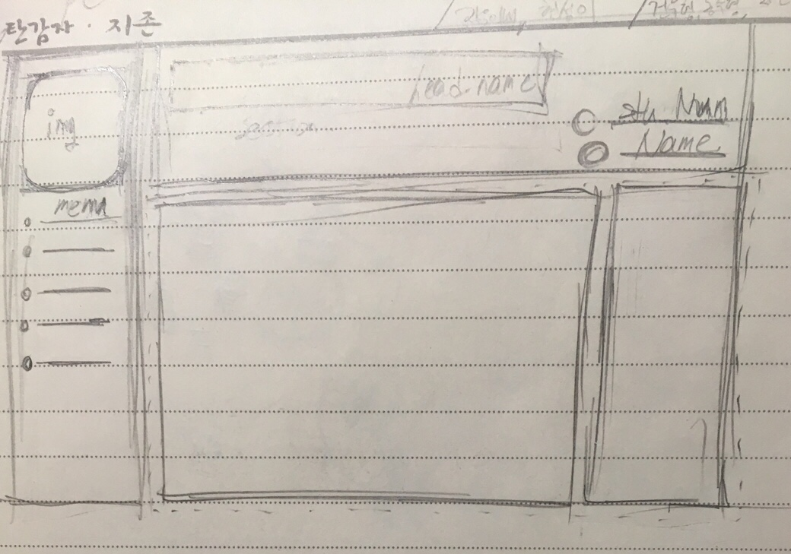
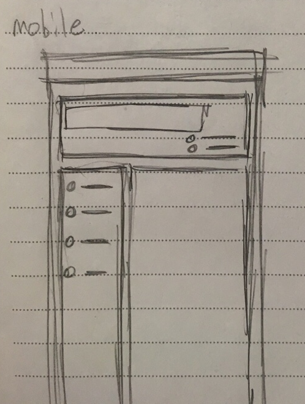

== Menu ==
Personal Site_My First Site
2.1 - 반응형 웹 미적용.
해당 사진처럼 실습때 한 rwd0~4.html 의 내용처럼 비율에 따라서 자동으로 움직여지는,
모바일에서 비율이 작게되어 다른 화면이 적용되는 모습을 만들고 싶었지만,
먼저 만들어놓은 비율이 망가지기 시작하여 손을 대지 못한점이 너무 아쉬웠습니다.

왼쪽 : 예상의 데스크톱 화면 / 오른쪽 : 예상의 모바일 환경 화면
기존에 만들기전 원했던 화면이였습니다. 데스크톱은 어느정도 계획과 맞아 떨어지게 만들어졌다고 하지만,
모바일은 구현을 못하여 비율면으로 구현하지 못하였습니다.
2.2 - 데이터베이스나 서버구축후 자신이 코딩한내용 저장
실습때 form을 열심히 배웠지만, 이 데이터를 어디로 보내야되는지,
혹은 보낸다고 하더래도 어떻게 저장할수 있는지를 모르겠습니다.
하지만 이 내용들을 알게된다면 form을 이용하여 과목별로 데이터를 저장하여 한눈에 정리되어있는
형태로 만들수 있을 것 같았습니다.
2.3 - 자바스크립트에 대한 황용 부족
Html은 내용(=정보)를, Css는 시각적인 디자인을, JavaScript는 사이트의 동적인 부분을 담당한..다지만
수업때 사용한 자바스크립트로는 만들어놓은 파일에 form이나 box로 이루어진 button으로 입력하여 표현하는 것을 배웠고,
그것을 해당 사이트에 어떻게 적용시켜야 될지 감이 잡히지 않았습니다.
인터넷을 통해 찾아보면 여러가지 일을 할수 있다고 하는데, 어떻게 하는지 모르고 사용법을 몰라 아쉬웠습니다.